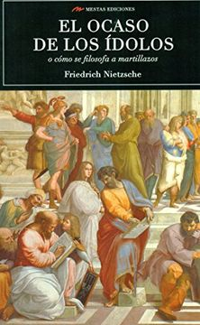
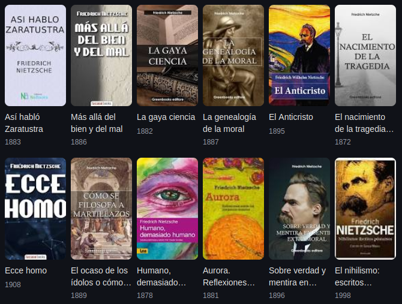

📚 Volver al Catálogo
📚 Volver a la Galería
F. Nietzsche
El Ocaso de los Ídolos
- Sinópsis:
- En "El ocaso de los ídolos", Nietzsche realiza una crítica mordaz y aforística de los valores, las creencias y las figuras consideradas "ídolos" de la cultura occidental. Con su estilo provocador, ataca la moral cristiana, la metafísica tradicional, la idea de la razón como facultad suprema y otras nociones que, según él, han debilitado y falseado la vida. A través de reflexiones punzantes y sentencias lapidarias, Nietzsche busca desenmascarar estos ídolos para abrir paso a una nueva valoración de la existencia, basada en la voluntad de poder y la afirmación vital. Es una invitación a la transvaloración de todos los valores y a la liberación de las ataduras impuestas por la tradición.

- Detalles de Publicación:
- Escrito: Principalmente en el verano y otoño de 1888.
- Publicado: En 1889.
- Inicialmente, solo se publicó un pequeño número de copias. Posteriormente, se incluyó como parte de una edición de sus obras en 1895.

- Más libros de Nietzsche aquí
⬆️